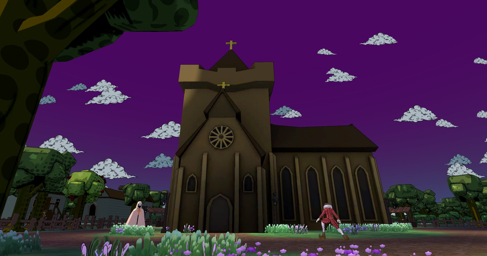

Third-person stealth exploration
The Ballad of Auld Dunrod
A third-person stealth exploration game based on a Scottish folklore poem, in which the player helps Dunrod escape capture.

- ~70%
- of the code written by me
- Lead
- of the programming team
- WebGL
- runs on phones and iPads
- Client
- project, delivered
What I built
- Built the guard AI: a patrol, investigate and chase state machine with view-cone detection and an alert meter.
- Added rooftop lookouts that sweep an area and call nearby guards when they spot the player.
- Built a top-down camera that follows the player along a looping dolly track, finding the closest point on the path and recovering cleanly when the player respawns.
- Wrote the touch controls, including a virtual joystick, so the game plays on phones and school iPads.
- Added a fairy guide that pathfinds to the next objective and leaves a particle trail, plus a map that tracks progress.
- Optimised for mobile browsers by culling lights outside the camera's view.
My role
I led the programming team and wrote around 70% of the game's code myself, including nearly all of the guard AI, the camera, the game manager and the touch joystick. I also coordinated the technical work, prioritised features, and made sure the game was stable and complete enough to deliver as a client project.
What I learned
Owning most of a codebase while still leading a team: prioritising, keeping systems simple enough for others to build on, optimising for the browser, and delivering against a clear client-facing goal.
How it works
Cheap checks first
The game had to run in a mobile browser on school iPads, so guard vision does its cheapest tests first. It compares squared distances to skip the square root, then tests the view cone with a single dot product against a cosine worked out once at start-up. Only a target that passes both pays for a physics raycast to confirm line of sight. A small near circle means the player cannot stand right behind a guard unnoticed.
An alert meter, not an instant fail
Being seen does not start a chase straight away. An alert meter fills while the player is in view and drains when they break line of sight, and the chase begins only once it is full. That gives the player a moment to react and makes close calls feel fair. Thrown cheese takes priority over the player, so it works as a reliable distraction.
A camera on a looping track
The top-down camera rides a dolly track that loops around the level. The track is sampled once at start-up, and each update only considers the samples within a few metres of the camera's last position, 20 times a second instead of every frame. Because the track loops, the cart always travels the short way round, and when the player respawns somewhere else the camera does one full search to snap to the right place.
- Walk the patrol route
- Turn and inspect at waypoints
- Player seen: alert meter fills
- Chase
- Lose the player: reset
- Walk back to the route
Code
Short excerpts from the project, written by me.
private bool DetectTarget(Transform target)
{
Vector3 targetDirection = (target.position - transform.position).normalized;
float sqrDis = (transform.position - target.position).sqrMagnitude;
if (sqrDis < viewRange)
{
//in view cone?
Vector3 dirNormalised = (target.position - transform.position).normalized;
float dot = Vector3.Dot(transform.forward, dirNormalised);//cos() between guard.fwd and target
bool withinAngle = dot >= cosThreshold;
bool withinNearDistance = sqrDis <= nearDis * nearDis;//in near circle?
if (withinAngle || withinNearDistance)
{
float realDis = Mathf.Sqrt(sqrDis);
if (Physics.Raycast(transform.position, targetDirection, out RaycastHit hit, realDis))
{
if (hit.collider.CompareTag(target.tag))//checks if hit target contains player or cheese tag
{
return true;
}
}
}
}
return false;
}Ordered from cheapest test to most expensive, so most guards on most frames never reach the raycast.
private void Update()
{
if (path != null && target != null && Time.time - lastUpdateTime > updateInterval)//checks position on a fixed time rather than every frame
{
lastUpdateTime = Time.time;
//get target
float target = UpdateDollyPosition();
float pathLength = path.PathLength; // Get the total track length
float currentPos = dollyCart.m_Position; // Current position of the dolly cart
float diff = target - currentPos; // Difference between target and current position
// Ensure shortest path around the loop
if (Mathf.Abs(diff) > pathLength * 0.5f)
{
if (diff > 0)
diff -= pathLength; // Adjust forward jump if it's too large
else
diff += pathLength; // Adjust backward jump if it's too large
}
//ensure position wraps within the valid range [0, pathLength]
float updatedPos = Mathf.Lerp(currentPos, WrapPosition(currentPos + diff), smoothSpeed * Time.deltaTime);
dollyCart.m_Position = updatedPos;
}
}Without the wrap check, crossing the start of the loop would send the camera the long way round the whole level.
Trailer
Screenshots


Play it
Runs in your browser, no download. Built for touch screens: drag the on-screen joystick with your finger or mouse.
Like what you see?
I'm looking for my first games industry role as a gameplay or AI programmer. Studios of any size welcome.